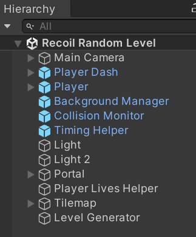

Recoil / Getting Started
Recoil can be found in the Assets/Byteman/Recoil folder.Recoil includes a demo level or scene, named Recoil Random Level.
The hierarchy appears as follows:

Recoil features only one demo scene, as it employs a script capable of generating random levels.
Therefore, each time the scene initiates, the gameplay experience will differ.
Here's a quick description of the objects in the hierarchy:
Player Dash - This display appears at the top of the screen, indicating the remaining lives, bullets, and gems for the player to collect.
Player - Refers to the player sprite.
Background Manager - Responsible for generating backgrounds selected from a collection of prefabs.
Collision Monitor - Determines which objects can collide within the game environment.
Timing Helper - Manages the game's target frame rate, time scale, and v-sync count.
Light & Light 2 - Controls scene lighting.
Portal - Functions as an object spawner within the game.
Player Lives Helper - Monitors the player's status and awards additional lives until reaching the maximum limit.
Tilemap - Represents the game's tilemap.
Level Generator - Randomly generates game levels by converting the tilemap into 3D and adding collectible objects for the player.
Level Generator
The Level Generator has 4 types of classes or scripts attached to it:
World Borders - Specifies the width and height of the level.
Random Tiles - Utilizes a set of prefabs to generate the level randomly.
Tile To 3D - Transforms the 2D tilemap into a 3D tilemap.
Tile To Object - Converts a 2D tile into a 3D object using a specified prefab.
World Borders
Width and Height specify the dimensions of the level.
The World Borders script will draw a rectangle using the specified Border Tile, and the Random Tiles script will use the width and height variables to fill the area.
Make sure a Tilemap is assigned.
Random Tiles
Random Tiles utilizes a set of prefabs to generate the level randomly.
The demo level comes with 21 prefabs named Block 1 to 21, and the Unity built-in tile editor can be used to edit these blocks.
Whenever the game starts, a level will be generated using these blocks.
The script will attempt to fill the level with these blocks, using the border tiles as boundaries.
Parameters explained:
Count - Determines how many blocks will be copied.
Prefabs - An array of prefabs to randomly choose from.
Fail Safe - The number of attempts to find free space for each block.
Void Tile - The script uses a tile or marker to define the borders of a block. These borders are used to maintain space between the blocks, allowing the player room to maneuver.
Free Area - Defines the area that must remain free of tiles, usually the starting position of the player, to prevent the player from getting stuck.
This is an example of a prefab:

Note that the block has a border around it with the void tile.
The void tile must match the void tile variable specified in the script, and it must be included in the tile palette, as shown here:

In this case the first tile in the row is the void tile.
The other tiles from left to right are: wall, coin, bullet, and gem.
The system is set up in such a way that you can draw a level or prefab block using the Unity built-in tile editor, and the level generator will convert it into a 3D environment.
Tile To 3D
Tile To 3D - Transforms the 2D tilemap into a 3D tilemap.
Some parameters explained:
Id - Represents the tile in the tilemap that needs to be converted into a cube.
Texture - Specifies the skin of the cube.
Other parameters should be self-explanatory or are beyond the scope of / not relevant to this project.
Tile To Object
Tile To Object - Converts a 2D tile into a 3D object using a specified prefab.
Some parameters explained:
Id - Represents the tile in the tilemap that needs to be converted into a 3D object.
Prefab - Specifies the 3D object to which the tile has to be converted.
Other parameters should be self-explanatory or are beyond the scope of / not relevant to this project.
Scripts must be executed in the order specified by the order parameter.